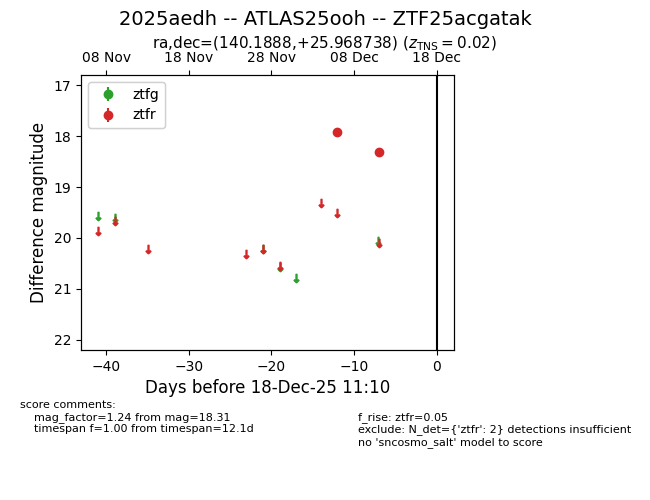
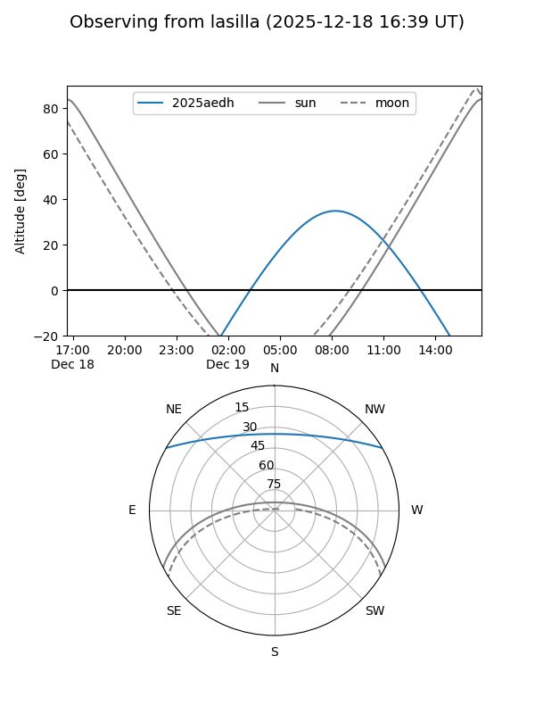
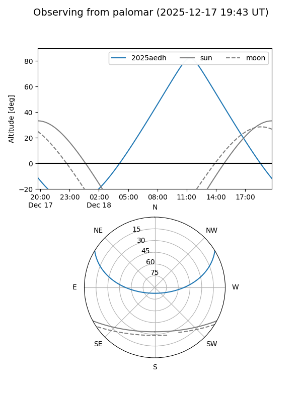
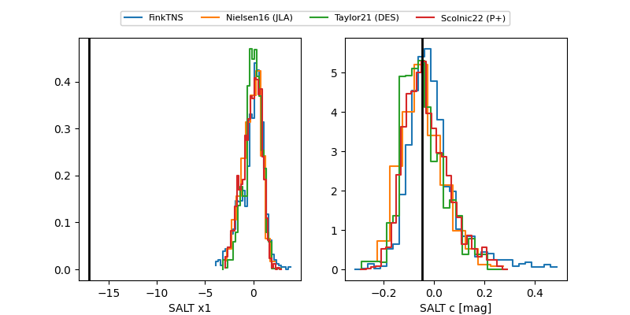

2025aedh
Target 2025aedh at 2025-12-20 13:20
Aliases and brokers:
FINK: fink-portal.org/ZTF25acgatak
Lasair: lasair-ztf.lsst.ac.uk/objects/ZTF25acgatak
ALeRCE: alerce.online/object/ZTF25acgatak
TNS: wis-tns.org/object/2025aedh
YSE: ziggy.ucolick.org/yse/transient_detail/2025aedh
alt names
ZTF25acgatak (ztf,fink_ztf)
2025aedh (tns,yse)
ATLAS25ooh (atlas)
Coordinates:
equatorial (ra, dec) = 140.1888,+25.96874
equatorial (HMS+DMS) = 09:20:45.31,+25:58:07.46
galactic (l, b) = (201.7651,+43.22465)
Flags:
confirmed ia
likely cv
Photometry:
last atlasc=17.91, atlaso=18.70, ztfg=20.39, ztfr=18.97
4 atlasc, 8 atlaso, 1 ztfg, 3 ztfr detections
Lightcurve

Visibility


Additional plots
